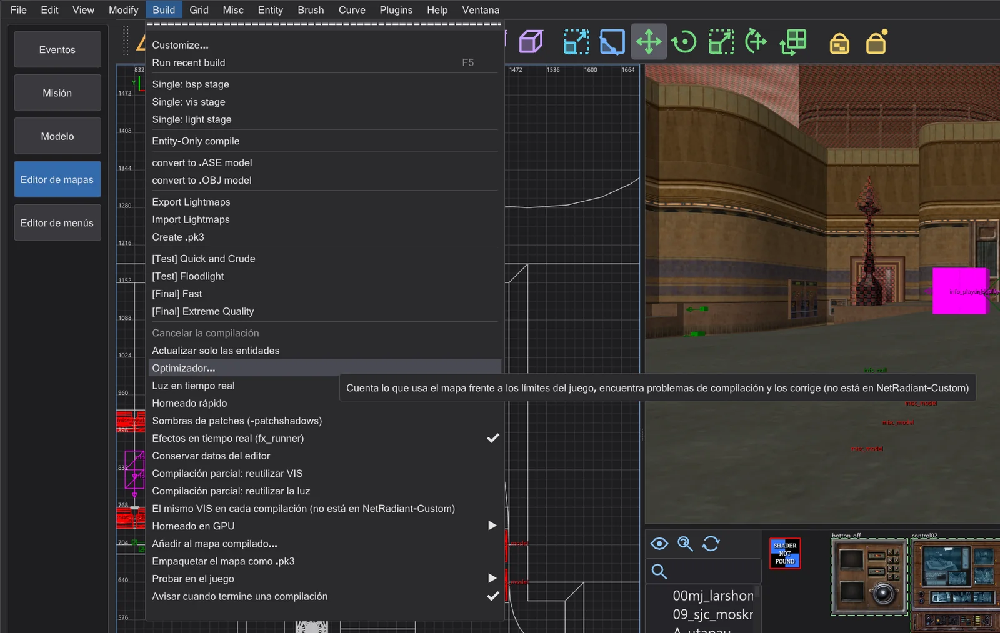
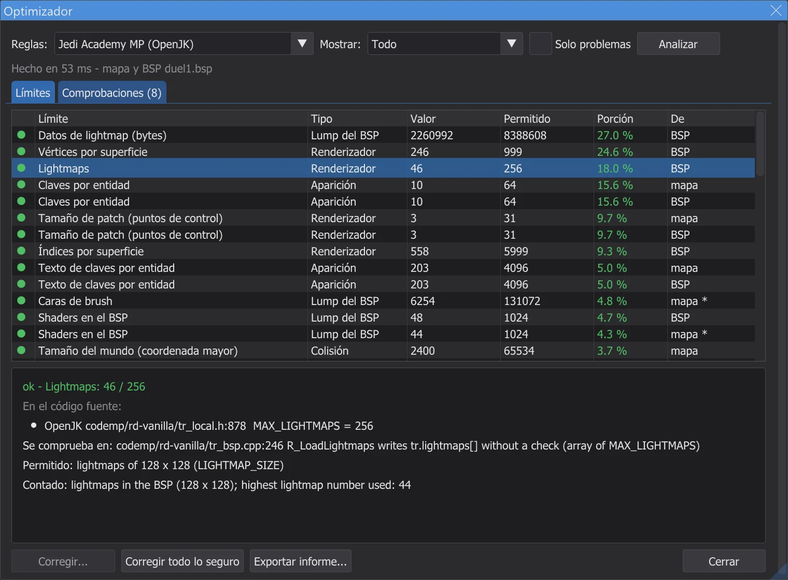
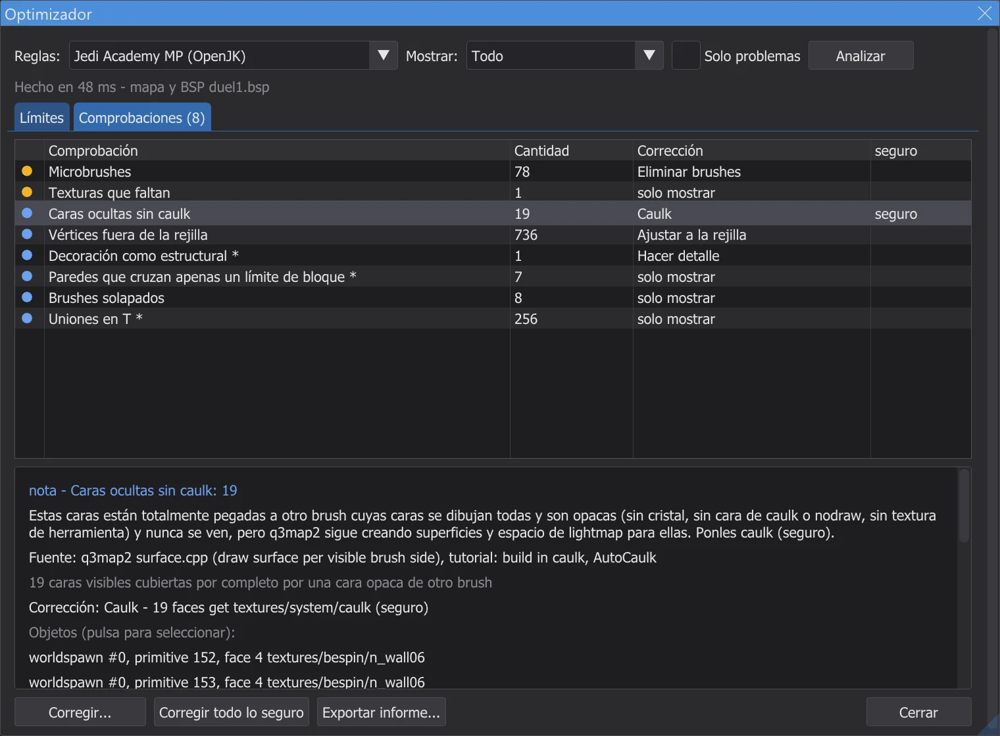
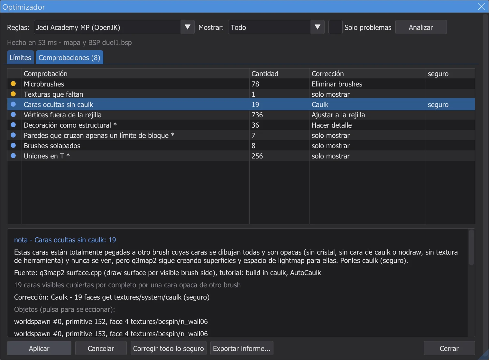
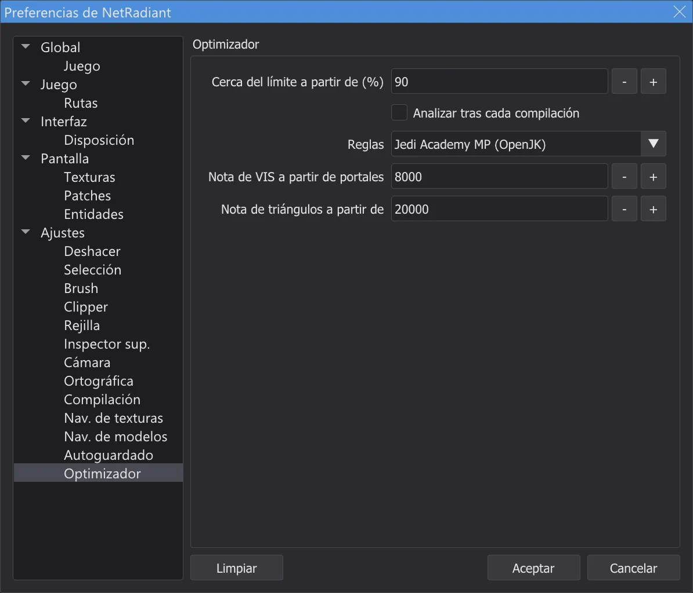

Editor de mapas: optimizador y límites
Build > Optimizador cuenta lo que usa el mapa frente a cada límite de Jedi Academy, Movie Duels y Jedi Outcast (cada límite sacado del código fuente del motor), encuentra problemas de compilación como fugas, caras ocultas sin caulk y patches con demasiados planos de colisión, y corrige muchos de ellos con solo pulsar un botón.
Abrir el optimizador#

- 1
Build > Optimizador abre la ventana Optimizador y analiza el mapa en segundo plano, también los mapas más grandes; el editor se puede seguir usando mientras tanto. La consola muestra un resumen al final.
- 2
Reglas: elige los límites: Automático toma el juego con el que trabaja el editor (Jedi Academy, Movie Duels o Jedi Outcast); también se puede elegir Jedi Academy multijugador.
- 3
Si el mapa se compiló (mira Editor de mapas: compilar el mapa) o se abrió como mapa compilado (Editor de mapas: abrir y cambiar mapas terminados), también se analiza el .bsp: rejilla de luz, lightmaps, visibilidad, triángulos por vista, la línea de fuga de la última etapa BSP. Sin .bsp solo se cuenta el mapa.
- 4
En la página Optimizador de Preferences el optimizador se puede ejecutar solo tras cada compilación; solo se abre cuando hay problemas.
Límites#

- ok: muy por debajo del límite. cerca: a partir del 90 % (ajustable). excedido: por encima de un límite que el juego impone: el mapa no carga, se cuelga o pierde algo.
- nota: un límite del formato del archivo .bsp (
MAX_MAP_*enqfiles.h) que ni el motor ni q3map2 comprueban. Los propios mapas de Raven superan varios, así que el optimizador nunca los da por excedidos: solo los anota. - Los valores marcados con * son estimaciones (por ejemplo las entidades que quedan tras aparecer, o lo que cuesta un modelo). La columna De dice si un valor se contó en el mapa o en el .bsp.
- Un clic en un límite selecciona en el mapa a los que más aportan y centra las vistas en ellos.
code/, multijugador codemp/), el código de Movie Duels para Movie Duels, OpenJK con JK2_MODE y codeJK2/ para Jedi Outcast. Donde un mod sube un límite, el optimizador sigue comprobando con el valor original, más estricto (por ejemplo 2048 en vez de 4096 planos de patch). Las tablas al final de la página listan cada límite con archivo y línea; el test karte_grenzen vuelve a leer esas líneas de las fuentes.Comprobaciones y correcciones#

- 1
Un clic en un hallazgo selecciona sus objetos y centra en ellos las vistas 2D y la cámara.
- 2
Corregir muestra lo que cambiaría; Aplicar lo hace. Cada corrección es un paso de Deshacer, y después se vuelve a contar el mapa: el hallazgo desaparece o se reduce.

La vista previa de una corrección antes de aplicarla. - 3
Corregir todo lo seguro aplica solo las correcciones marcadas como seguro (las que no pueden cambiar cómo se ve o se juega el mapa) en un solo paso de deshacer.
- 4
Las correcciones que fijan una clave de worldspawn (rejilla de luz, lightmaps) surten efecto con la siguiente compilación; la consola lo dice. Exportar informe escribe todo con las fuentes en un archivo de texto.

| Comprobación | Qué significa | Corrección | Seguro |
|---|---|---|---|
| Fuga (leak) | El mapa no está sellado: q3map2 encontró un camino desde una entidad hasta el vacío (línea de fuga). VIS y la iluminación necesitan un casco cerrado. Muestra la fuga con File > Pointfile y cierra el hueco | solo mostrar | - |
| Brush de detalle en la línea de fuga | Los brushes de detalle no sellan el mapa. La línea de fuga pasa por estos: hazlos estructurales o sella por detrás | Hacer estructural | - |
| Caras ocultas sin caulk | Estas caras están totalmente pegadas a otro brush cuyas caras se dibujan todas y son opacas (sin cristal, sin cara de caulk o nodraw, sin textura de herramienta) y nunca se ven, pero q3map2 sigue creando superficies y espacio de lightmap para ellas. Ponles caulk (seguro) | Caulk | seguro |
| Brushes degenerados | Brushes sin forma válida. q3map2 los descarta; solo ensucian el mapa. Elimínalos (seguro) | Eliminar brushes | seguro |
| Microbrushes | Los brushes de menos de una unidad de grosor causan problemas de precisión en el BSP y divisiones. Elimínalos o hazlos más gruesos | Eliminar brushes | - |
| Vértices fuera de la rejilla | Las esquinas de brush fuera de unidades enteras provocan grietas y destellos cuando q3map2 ajusta los planos. Ajusta a la rejilla de 1 unidad (seguro cuando solo es ruido de redondeo) | Ajustar a la rejilla | seguro |
| Hint o areaportal marcado como detalle | Los brushes hint y areaportal deben ser estructurales; q3map2 avisa "Mixed detail and structural" y usa estructural igualmente. Hazlos estructurales (seguro) | Hacer estructural | seguro |
| Areaportal dentro de una entidad | q3map2 solo admite areaportals en el mundo ("areaportals only allowed in world") y los omite. Mueve el brush a worldspawn | solo mostrar | - |
| Decoración como estructural | Los brushes estructurales pequeños, finos o inclinados dividen el BSP en muchas hojas y portales (VIS lento). Sugerencia: hazlos de detalle, pero nunca los brushes que sellan el mapa | Hacer detalle | - |
| Paredes que cruzan apenas un límite de bloque | q3map2 corta el BSP en cada límite de _blocksize (1024). Una pared que cruza solo un poco añade cortes: alinéala con el límite | solo mostrar | - |
| Brushes solapados | Los brushes que se solapan causan z-fighting y caras dobles. Inglete las paredes (Clipper, CSG) en vez de solaparlas | solo mostrar | - |
| Uniones en T | Una esquina queda dentro de la arista de otro brush. q3map2 lo arregla con vértices extra (más vértices por superficie); alinea los brushes donde importe | solo mostrar | - |
| Patch cerca de los límites de colisión | El motor crea planos y facetas de colisión para cada patch; por encima de MAX_PATCH_PLANES (original 2048) o MAX_FACETS el mapa no carga. Divide el patch (bobToolz Split patch) | Dividir patch | - |
| Desbordamiento de la rejilla del patch | Este patch se subdivide en más de 129 columnas de rejilla; el motor escribe fuera de su rejilla (corrupción de memoria). Divide el patch o aplánalo | Dividir patch | - |
| Modelos con colisión | Un misc_model con flags de colisión hace que q3map2 cree un brush por triángulo (muchos brushes y planos). Unos pocos brushes physics_clip suelen ser mejores | solo mostrar | - |
| Texturas que faltan | No se encontró script de shader ni imagen para estos nombres: el juego muestra la textura por defecto. Elige texturas que existan o añádelas al mod | solo mostrar | - |
| Entidad de brushes sin brushes | El juego se detiene con "SV_SetBrushModel: NULL". Dale brushes a la entidad o elimínala | Eliminar entidades | - |
| Rejilla de luz rota | La rejilla de luz está llena o no coincide: hay celdas que apuntan más allá de la rejilla y las entidades reciben luz errónea o ninguna. Fija un "gridsize" de worldspawn mayor y vuelve a iluminar | Fijar clave de worldspawn | - |
| Demasiados lightmaps | El renderizador admite 256 lightmaps; cerca o por encima, sube "_lightmapscale" en worldspawn (lightmaps más bastos) y vuelve a iluminar | Fijar clave de worldspawn | - |
| VIS costoso | Muchos portales hacen lento el VIS (passage portal flow). Haz la decoración de detalle, añade brushes hint, sube _blocksize | solo mostrar | - |
| Muchos triángulos por vista (estimación) | Estimado a partir del PVS del peor cluster (sin frustum de vista): lo que r_speeds mostraría como máximo. Corta las líneas de visión con paredes, brushes hint o areaportals | solo mostrar | - |
| Punto de aparición dentro de un sólido | Este punto de aparición o NPC spawner está dentro de un sólido o fuera del mapa (sin cluster). Muévelo a la zona jugable | solo mostrar | - |
| Unir modelos de brushes | Los modelos de brushes están cerca de MAX_SUBMODELS. Las entidades de brushes con exactamente las mismas claves y sin targetname pueden ser un solo modelo | Unir modelos de brushes | - |
| Modelo que nunca se dibuja (misc_model_static) | El juego solo dibuja un misc_model_static si el punto origin + (0 0 zoffset+1) está en una zona abierta. Aquí está dentro de un sólido, así que el modelo nunca aparece (OpenJK#1358). Corrección: un zoffset que saca solo este punto de descarte del sólido; el modelo se queda donde está | Fijar clave de entidad | - |
| common/origin en vez de system/origin | Jedi Academy y Jedi Outcast solo conocen textures/system/origin como brush de origen. Con common/origin q3map2 crea un brush normal y la entidad acaba en 0 0 0 (NRC#270). Corrección: reemplazar la textura por system/origin | Reemplazar textura | - |
| Brushes enormes | Los brushes muy grandes (por ejemplo una caja de cielo hecha de unos pocos brushes gigantes) pierden precisión en q3map2 y pueden tener fugas (GtkRadiant#271). Construye el casco con brushes más pequeños | solo mostrar | - |
| Luz de superficie bajo brushes sólidos | q3map2 ilumina cada superficie que emite luz (lava, paneles de luz) también desde una copia 23 unidades por delante (backsplash). Si un brush sólido está más cerca, esa luz aparece al otro lado: la luz atraviesa el suelo (GL#189, NRC#144). Aleja el brush, acorta la superficie de luz o pon q3map_backsplash 0 0 en el shader | solo mostrar | - |
| Opciones de compilación que este juego no puede usar | Los lightmaps externos (-external, o -lightmapsize distinto de 128) no funcionan en Jedi Outcast (NRC#98) ni junto con estilos de luz en ningún juego (NRC#48). El menú de compilación rechaza esas entradas; quita la opción en Build > Customize | solo mostrar | - |
| Lightmaps externos por shaders | Un shader con q3map_lightmapSize distinto de 128 recibe un lightmap externo. En Jedi Academy y Movie Duels los estilos de luz pierden entonces sus etapas de lightmap en esas superficies (NRC#48, un límite de q3map2 para RBSP); Jedi Outcast no puede cargar lightmaps externos en absoluto (NRC#98). Quita q3map_lightmapSize del shader, o no uses estilos de luz (luces conmutables o parpadeantes) cerca de esas superficies | solo mostrar | - |
Ajustes#

Cerca del límite a partir de (%) fija a partir de qué porción un límite cuenta como cercano, Analizar tras cada compilación ejecuta el optimizador tras cada compilación, Reglas fija las reglas, Nota de VIS a partir de portales y Nota de triángulos a partir de son los umbrales de las notas de VIS y de triángulos.
Los límites de cada juego#
Permitido es el valor con el que comprueba el optimizador: uno menos que el define donde el propio motor ocupa una plaza (por ejemplo el modelo del mundo o el modelo de caja), y el valor original más estricto donde un mod lo subió. La columna de fuente nombra cada lugar: el define y la línea que detiene el juego.
Jedi Academy (OpenJK SP)
| Límite | En el código fuente | Permitido | Tipo | Excedido | Fuente (archivo:línea) |
|---|---|---|---|---|---|
| Entidades en el BSP | MAX_MAP_ENTITIES = 2048 | 2048 | Lump del BSP | nota | OpenJK code/qcommon/qfiles.h:214 MAX_MAP_ENTITIES |
| Texto de entidades (bytes) | MAX_MAP_ENTSTRING = 262144 | 262144 | Lump del BSP | nota | OpenJK code/qcommon/qfiles.h:215 MAX_MAP_ENTSTRING |
| Shaders en el BSP | MAX_MAP_SHADERS = 1024 | 1024 | Lump del BSP | nota | OpenJK code/qcommon/qfiles.h:216 MAX_MAP_SHADERS |
| Modelos en el BSP | MAX_MAP_MODELS = 1024 | 1024 | Lump del BSP | nota | OpenJK code/qcommon/qfiles.h:212 MAX_MAP_MODELS |
| Brushes | MAX_MAP_BRUSHES = 32768 | 32768 | Lump del BSP | nota | OpenJK code/qcommon/qfiles.h:213 MAX_MAP_BRUSHES |
| Caras de brush | MAX_MAP_BRUSHSIDES = 131072 | 131072 | Lump del BSP | nota | OpenJK code/qcommon/qfiles.h:222 MAX_MAP_BRUSHSIDES |
| Planos | MAX_MAP_PLANES = 131072 | 131072 | Lump del BSP | nota | OpenJK code/qcommon/qfiles.h:220 MAX_MAP_PLANES |
| Nodos del BSP | MAX_MAP_NODES = 131072 | 131072 | Lump del BSP | nota | OpenJK code/qcommon/qfiles.h:221 MAX_MAP_NODES |
| Hojas | MAX_MAP_LEAFS = 131072 | 131072 | Lump del BSP | nota | OpenJK code/qcommon/qfiles.h:223 MAX_MAP_LEAFS |
| Superficies de hoja | MAX_MAP_LEAFFACES = 131072 | 131072 | Lump del BSP | nota | OpenJK code/qcommon/qfiles.h:224 MAX_MAP_LEAFFACES |
| Brushes de hoja | MAX_MAP_LEAFBRUSHES = 262144 | 262144 | Lump del BSP | nota | OpenJK code/qcommon/qfiles.h:225 MAX_MAP_LEAFBRUSHES |
| Superficies de dibujo | MAX_MAP_DRAW_SURFS = 131072 | 131072 | Lump del BSP | nota | OpenJK code/qcommon/qfiles.h:233 MAX_MAP_DRAW_SURFS |
| Vértices de dibujo | MAX_MAP_DRAW_VERTS = 524288 | 524288 | Lump del BSP | nota | OpenJK code/qcommon/qfiles.h:234 MAX_MAP_DRAW_VERTS |
| Índices de dibujo | MAX_MAP_DRAW_INDEXES = 524288 | 524288 | Lump del BSP | nota | OpenJK code/qcommon/qfiles.h:235 MAX_MAP_DRAW_INDEXES |
| Nieblas en el BSP | MAX_MAP_FOGS = 256 | 256 | Lump del BSP | nota | OpenJK code/qcommon/qfiles.h:219 MAX_MAP_FOGS |
| Datos de lightmap (bytes) | MAX_MAP_LIGHTING = 8388608 | 8388608 | Lump del BSP | nota | OpenJK code/qcommon/qfiles.h:227 MAX_MAP_LIGHTING |
| Datos de visibilidad (bytes) | MAX_MAP_VISIBILITY = 4194304 | 4194304 | Lump del BSP | nota | OpenJK code/qcommon/qfiles.h:231 MAX_MAP_VISIBILITY |
| Portales | MAX_MAP_PORTALS = 131072 | 131072 | Lump del BSP | nota | OpenJK code/qcommon/qfiles.h:226 MAX_MAP_PORTALS |
| Puntos de la rejilla de luz | MAX_MAP_LIGHTGRID = 65535 | 65535 | Lump del BSP | excedido | OpenJK code/qcommon/qfiles.h:228 MAX_MAP_LIGHTGRID; q3map2 tools/quake3/q3map2/bspfile_rbsp.cpp:82 MAX_MAP_GRID |
| Celdas de la rejilla de luz | MAX_MAP_LIGHTGRID_ARRAY = 1048576 | 1048576 | Lump del BSP | nota | OpenJK code/qcommon/qfiles.h:229 MAX_MAP_LIGHTGRID_ARRAY; q3map2 tools/quake3/q3map2/q3map2.h:210 MAX_MAP_LIGHTGRID |
| Áreas | MAX_MAP_AREAS = 256 | 256 | Lump del BSP | excedido | OpenJK code/qcommon/qfiles.h:218 MAX_MAP_AREAS; OpenJK code/qcommon/q_shared.h:228 MAX_MAP_AREA_BYTES; q3map2 tools/quake3/q3map2/q3map2.h:203 MAX_MAP_AREAS |
| Vértices por superficie | SHADER_MAX_VERTEXES = 1000 | 999 | Renderizador | excedido | OpenJK code/qcommon/qfiles.h:33 SHADER_MAX_VERTEXES; q3map2 tools/quake3/q3map2/games.cpp:756 |
| Índices por superficie | SHADER_MAX_INDEXES = 6000 | 5999 | Renderizador | excedido | OpenJK code/qcommon/qfiles.h:34 SHADER_MAX_INDEXES |
| Lightmaps | MAX_LIGHTMAPS = 256 | 256 | Renderizador | excedido | OpenJK code/rd-vanilla/tr_local.h:843 MAX_LIGHTMAPS |
| Nieblas (bits de orden) | QSORT_FOGNUM_SHIFT = 30 | 30 | Renderizador | excedido | OpenJK code/rd-vanilla/tr_local.h:874 QSORT_FOGNUM_SHIFT; OpenJK code/rd-vanilla/tr_local.h:875 QSORT_REFENTITYNUM_SHIFT; q3map2 tools/quake3/q3map2/q3map2.h:206 MAX_RBSP_FOGS |
| Tamaño de patch (puntos de control) | MAX_PATCH_SIZE = 32 | 31 | Renderizador | excedido | OpenJK code/rd-vanilla/tr_local.h:592 MAX_PATCH_SIZE; q3map2 tools/quake3/q3map2/q3map2.h:126 MAX_PATCH_SIZE |
| Superficies por vista (estimación) | MAX_DRAWSURFS = 65536 | 65536 | Renderizador | excedido | OpenJK code/rd-vanilla/tr_local.h:847 MAX_DRAWSURFS |
| Shaders cargados | MAX_SHADERS = 8192 | 8192 | Renderizador | excedido | OpenJK code/rd-vanilla/tr_local.h:43 SHADERNUM_BITS; OpenJK code/rd-vanilla/tr_local.h:44 MAX_SHADERS |
| Skins cargadas | MAX_SKINS = 512 | 512 | Renderizador | excedido | OpenJK code/rd-vanilla/tr_local.h:844 MAX_SKINS |
| Modelos de brushes (incl. el mundo) | MAX_SUBMODELS = 512 | 511 | Colisión | excedido | OpenJK code/qcommon/q_shared.h:642 MAX_SUBMODELS; OpenJK code/qcommon/cm_local.h:31 BOX_MODEL_HANDLE |
| Planos de colisión por patch | MAX_PATCH_PLANES = 4096 | 2048 | Colisión | excedido | OpenJK code/qcommon/cm_patch.h:65 MAX_PATCH_PLANES |
| Facetas de colisión por patch | MAX_FACETS = 1024 | 1024 | Colisión | excedido | OpenJK code/qcommon/cm_patch.h:64 MAX_FACETS |
| Puntos de control por patch | MAX_PATCH_VERTS = 1024 | 1024 | Colisión | excedido | OpenJK code/qcommon/cm_load.cpp:527 MAX_PATCH_VERTS |
| Tamaño del mundo (coordenada mayor) | MAX_MAP_BOUNDS = 65535 | 65534 | Colisión | excedido | OpenJK code/qcommon/cm_polylib.h:44 MAX_MAP_BOUNDS; OpenJK code/qcommon/q_shared.h:802 MAX_WORLD_COORD; q3map2 tools/quake3/common/maxworld.h:4 MAX_WORLD_COORD |
| Entidades tras aparecer | MAX_GENTITIES = 1024 | 1021 | Ejecución | excedido | OpenJK code/qcommon/q_shared.h:621 GENTITYNUM_BITS; OpenJK code/qcommon/q_shared.h:618 MAX_CLIENTS |
| misc_model_static (misc ents de cgame) | MAX_MISC_ENTS = 2000 | 2000 | Ejecución | excedido | OpenJK code/cgame/cg_main.cpp:1949 MAX_MISC_ENTS |
| Modelos (configstrings) | MAX_MODELS = 256 | 255 | Ejecución | excedido | OpenJK code/qcommon/q_shared.h:632 MAX_MODELS |
| Sonidos (configstrings) | MAX_SOUNDS = 380 | 379 | Ejecución | excedido | OpenJK code/qcommon/q_shared.h:637 MAX_SOUNDS |
| Efectos (configstrings) | MAX_FX = 128 | 127 | Ejecución | excedido | OpenJK code/qcommon/q_shared.h:644 MAX_FX |
| Efectos del mundo (lluvia, nieve, viento) | MAX_WORLD_FX = 66 | 65 | Ejecución | excedido | OpenJK code/qcommon/q_shared.h:649 MAX_WORLD_FX |
| Texto de configstrings (cota inferior) | MAX_GAMESTATE_CHARS = 16000 | 16000 | Ejecución | excedido | OpenJK code/qcommon/q_shared.h:730 MAX_GAMESTATE_CHARS |
| Archivos ROFF | MAX_ROFFS = 128 | 128 | Ejecución | excedido | OpenJK code/game/g_roff.h:34 MAX_ROFFS |
| Modelos de NPC por nivel | MAX_MODELS_PER_LEVEL = 60 | 60 | Ejecución | excedido | OpenJK code/game/NPC_stats.cpp:43 MAX_MODELS_PER_LEVEL |
| Sub-BSP (misc_bsp) | MAX_SUB_BSP = 32 | 31 | Ejecución | excedido | OpenJK code/qcommon/q_shared.h:640 MAX_SUB_BSP |
| Claves por entidad | MAX_SPAWN_VARS = 64 | 64 | Aparición | excedido | OpenJK code/game/g_local.h:221 MAX_SPAWN_VARS |
| Texto de claves por entidad | MAX_SPAWN_VARS_CHARS = 2048 | 2048 | Aparición | excedido | OpenJK code/game/g_local.h:222 MAX_SPAWN_VARS_CHARS |
| Estilos de luz conmutables | MAX_SWITCHED_LIGHTS = 32 | 32 | Compilador (q3map2) | excedido | q3map2 tools/quake3/q3map2/q3map2.h:193 MAX_SWITCHED_LIGHTS |
| Datos de visibilidad (q3map2) | MAX_MAP_VISIBILITY = 33554440 | 33554440 | Compilador (q3map2) | excedido | q3map2 tools/quake3/q3map2/q3map2.h:147 VIS_HEADER_SIZE; q3map2 tools/quake3/q3map2/q3map2.h:211 MAX_MAP_VISCLUSTERS; q3map2 tools/quake3/q3map2/q3map2.h:212 MAX_MAP_VISIBILITY |
Jedi Academy MP (OpenJK)
| Límite | En el código fuente | Permitido | Tipo | Excedido | Fuente (archivo:línea) |
|---|---|---|---|---|---|
| Entidades en el BSP | MAX_MAP_ENTITIES = 2048 | 2048 | Lump del BSP | nota | OpenJK codemp/qcommon/qfiles.h:316 MAX_MAP_ENTITIES |
| Texto de entidades (bytes) | MAX_MAP_ENTSTRING = 262144 | 262144 | Lump del BSP | nota | OpenJK codemp/qcommon/qfiles.h:317 MAX_MAP_ENTSTRING |
| Shaders en el BSP | MAX_MAP_SHADERS = 1024 | 1024 | Lump del BSP | nota | OpenJK codemp/qcommon/qfiles.h:318 MAX_MAP_SHADERS |
| Modelos en el BSP | MAX_MAP_MODELS = 1024 | 1024 | Lump del BSP | nota | OpenJK codemp/qcommon/qfiles.h:314 MAX_MAP_MODELS |
| Brushes | MAX_MAP_BRUSHES = 32768 | 32768 | Lump del BSP | nota | OpenJK codemp/qcommon/qfiles.h:315 MAX_MAP_BRUSHES |
| Caras de brush | MAX_MAP_BRUSHSIDES = 131072 | 131072 | Lump del BSP | nota | OpenJK codemp/qcommon/qfiles.h:324 MAX_MAP_BRUSHSIDES |
| Planos | MAX_MAP_PLANES = 131072 | 131072 | Lump del BSP | nota | OpenJK codemp/qcommon/qfiles.h:322 MAX_MAP_PLANES |
| Nodos del BSP | MAX_MAP_NODES = 131072 | 131072 | Lump del BSP | nota | OpenJK codemp/qcommon/qfiles.h:323 MAX_MAP_NODES |
| Hojas | MAX_MAP_LEAFS = 131072 | 131072 | Lump del BSP | nota | OpenJK codemp/qcommon/qfiles.h:325 MAX_MAP_LEAFS |
| Superficies de hoja | MAX_MAP_LEAFFACES = 131072 | 131072 | Lump del BSP | nota | OpenJK codemp/qcommon/qfiles.h:326 MAX_MAP_LEAFFACES |
| Brushes de hoja | MAX_MAP_LEAFBRUSHES = 262144 | 262144 | Lump del BSP | nota | OpenJK codemp/qcommon/qfiles.h:327 MAX_MAP_LEAFBRUSHES |
| Superficies de dibujo | MAX_MAP_DRAW_SURFS = 131072 | 131072 | Lump del BSP | nota | OpenJK codemp/qcommon/qfiles.h:334 MAX_MAP_DRAW_SURFS |
| Vértices de dibujo | MAX_MAP_DRAW_VERTS = 524288 | 524288 | Lump del BSP | nota | OpenJK codemp/qcommon/qfiles.h:335 MAX_MAP_DRAW_VERTS |
| Índices de dibujo | MAX_MAP_DRAW_INDEXES = 524288 | 524288 | Lump del BSP | nota | OpenJK codemp/qcommon/qfiles.h:336 MAX_MAP_DRAW_INDEXES |
| Nieblas en el BSP | MAX_MAP_FOGS = 256 | 256 | Lump del BSP | nota | OpenJK codemp/qcommon/qfiles.h:321 MAX_MAP_FOGS |
| Datos de lightmap (bytes) | MAX_MAP_LIGHTING = 8388608 | 8388608 | Lump del BSP | nota | OpenJK codemp/qcommon/qfiles.h:329 MAX_MAP_LIGHTING |
| Datos de visibilidad (bytes) | MAX_MAP_VISIBILITY = 6291456 | 6291456 | Lump del BSP | nota | OpenJK codemp/qcommon/qfiles.h:332 MAX_MAP_VISIBILITY |
| Portales | MAX_MAP_PORTALS = 131072 | 131072 | Lump del BSP | nota | OpenJK codemp/qcommon/qfiles.h:328 MAX_MAP_PORTALS |
| Puntos de la rejilla de luz | MAX_MAP_LIGHTGRID = 65535 | 65535 | Lump del BSP | excedido | OpenJK codemp/qcommon/qfiles.h:330 MAX_MAP_LIGHTGRID; q3map2 tools/quake3/q3map2/bspfile_rbsp.cpp:82 MAX_MAP_GRID |
| Celdas de la rejilla de luz | MAX_MAP_LIGHTGRID_ARRAY = 1048576 | 1048576 | Lump del BSP | nota | OpenJK codemp/qcommon/qfiles.h:331 MAX_MAP_LIGHTGRID_ARRAY; q3map2 tools/quake3/q3map2/q3map2.h:210 MAX_MAP_LIGHTGRID |
| Áreas | MAX_MAP_AREAS = 256 | 256 | Lump del BSP | excedido | OpenJK codemp/qcommon/qfiles.h:320 MAX_MAP_AREAS; OpenJK codemp/qcommon/q_shared.h:222 MAX_MAP_AREA_BYTES; q3map2 tools/quake3/q3map2/q3map2.h:203 MAX_MAP_AREAS |
| Vértices por superficie | SHADER_MAX_VERTEXES = 1000 | 999 | Renderizador | excedido | OpenJK codemp/qcommon/qfiles.h:34 SHADER_MAX_VERTEXES; q3map2 tools/quake3/q3map2/games.cpp:756 |
| Índices por superficie | SHADER_MAX_INDEXES = 6000 | 5999 | Renderizador | excedido | OpenJK codemp/qcommon/qfiles.h:35 SHADER_MAX_INDEXES |
| Lightmaps | MAX_LIGHTMAPS = 256 | 256 | Renderizador | excedido | OpenJK codemp/rd-vanilla/tr_local.h:878 MAX_LIGHTMAPS |
| Nieblas (bits de orden) | QSORT_FOGNUM_SHIFT = 30 | 30 | Renderizador | excedido | OpenJK codemp/rd-vanilla/tr_local.h:897 QSORT_FOGNUM_SHIFT; OpenJK codemp/rd-vanilla/tr_local.h:898 QSORT_REFENTITYNUM_SHIFT; q3map2 tools/quake3/q3map2/q3map2.h:206 MAX_RBSP_FOGS |
| Tamaño de patch (puntos de control) | MAX_PATCH_SIZE = 32 | 31 | Renderizador | excedido | OpenJK codemp/rd-vanilla/tr_local.h:648 MAX_PATCH_SIZE; q3map2 tools/quake3/q3map2/q3map2.h:126 MAX_PATCH_SIZE |
| Superficies por vista (estimación) | MAX_DRAWSURFS = 65536 | 65536 | Renderizador | excedido | OpenJK codemp/rd-vanilla/tr_local.h:882 MAX_DRAWSURFS |
| Shaders cargados | MAX_SHADERS = 16384 | 16384 | Renderizador | excedido | OpenJK codemp/rd-vanilla/tr_local.h:40 SHADERNUM_BITS; OpenJK codemp/rd-vanilla/tr_local.h:41 MAX_SHADERS |
| Skins cargadas | MAX_SKINS = 1024 | 1024 | Renderizador | excedido | OpenJK codemp/rd-vanilla/tr_local.h:879 MAX_SKINS |
| Modelos de brushes (incl. el mundo) | MAX_SUBMODELS = 512 | 510 | Colisión | excedido | OpenJK codemp/qcommon/cm_local.h:30 MAX_SUBMODELS; OpenJK codemp/qcommon/cm_local.h:31 BOX_MODEL_HANDLE |
| Planos de colisión por patch | MAX_PATCH_PLANES = 4096 | 2048 | Colisión | excedido | OpenJK codemp/qcommon/cm_patch.h:67 MAX_PATCH_PLANES |
| Facetas de colisión por patch | MAX_FACETS = 1024 | 1024 | Colisión | excedido | OpenJK codemp/qcommon/cm_patch.h:66 MAX_FACETS |
| Puntos de control por patch | MAX_PATCH_VERTS = 1024 | 1024 | Colisión | excedido | OpenJK codemp/qcommon/cm_load.cpp:519 MAX_PATCH_VERTS |
| Tamaño del mundo (coordenada mayor) | MAX_MAP_BOUNDS = 65535 | 65534 | Colisión | excedido | OpenJK codemp/qcommon/cm_polylib.h:44 MAX_MAP_BOUNDS; OpenJK codemp/qcommon/q_shared.h:54 MAX_WORLD_COORD; q3map2 tools/quake3/common/maxworld.h:4 MAX_WORLD_COORD |
| Entidades tras aparecer | MAX_GENTITIES = 1024 | 990 | Ejecución | excedido | OpenJK codemp/qcommon/q_shared.h:895 GENTITYNUM_BITS; OpenJK codemp/qcommon/q_shared.h:890 MAX_CLIENTS |
| Modelos (configstrings) | MAX_MODELS = 512 | 511 | Ejecución | excedido | OpenJK codemp/qcommon/q_shared.h:920 MAX_MODELS |
| Sonidos (configstrings) | MAX_SOUNDS = 256 | 255 | Ejecución | excedido | OpenJK codemp/qcommon/q_shared.h:921 MAX_SOUNDS |
| Efectos (configstrings) | MAX_FX = 64 | 63 | Ejecución | excedido | OpenJK codemp/qcommon/q_shared.h:923 MAX_FX |
| Texto de configstrings (cota inferior) | MAX_GAMESTATE_CHARS = 16000 | 16000 | Ejecución | excedido | OpenJK codemp/qcommon/q_shared.h:946 MAX_GAMESTATE_CHARS |
| Sub-BSP (misc_bsp) | MAX_SUB_BSP = 32 | 32 | Ejecución | excedido | OpenJK codemp/qcommon/q_shared.h:925 MAX_SUB_BSP |
| Claves por entidad | MAX_SPAWN_VARS = 64 | 64 | Aparición | excedido | OpenJK codemp/game/bg_public.h:36 MAX_SPAWN_VARS |
| Texto de claves por entidad | MAX_SPAWN_VARS_CHARS = 4096 | 4096 | Aparición | excedido | OpenJK codemp/game/bg_public.h:37 MAX_SPAWN_VARS_CHARS |
| Estilos de luz conmutables | MAX_SWITCHED_LIGHTS = 32 | 32 | Compilador (q3map2) | excedido | q3map2 tools/quake3/q3map2/q3map2.h:193 MAX_SWITCHED_LIGHTS |
| Datos de visibilidad (q3map2) | MAX_MAP_VISIBILITY = 33554440 | 33554440 | Compilador (q3map2) | excedido | q3map2 tools/quake3/q3map2/q3map2.h:147 VIS_HEADER_SIZE; q3map2 tools/quake3/q3map2/q3map2.h:211 MAX_MAP_VISCLUSTERS; q3map2 tools/quake3/q3map2/q3map2.h:212 MAX_MAP_VISIBILITY |
Movie Duels
| Límite | En el código fuente | Permitido | Tipo | Excedido | Fuente (archivo:línea) |
|---|---|---|---|---|---|
| Entidades en el BSP | MAX_MAP_ENTITIES = 2048 | 2048 | Lump del BSP | nota | MovieDuels code/qcommon/qfiles.h:321 MAX_MAP_ENTITIES |
| Texto de entidades (bytes) | MAX_MAP_ENTSTRING = 262144 | 262144 | Lump del BSP | nota | MovieDuels code/qcommon/qfiles.h:322 MAX_MAP_ENTSTRING |
| Shaders en el BSP | MAX_MAP_SHADERS = 1024 | 1024 | Lump del BSP | nota | MovieDuels code/qcommon/qfiles.h:323 MAX_MAP_SHADERS |
| Modelos en el BSP | MAX_MAP_MODELS = 1024 | 1024 | Lump del BSP | nota | MovieDuels code/qcommon/qfiles.h:319 MAX_MAP_MODELS |
| Brushes | MAX_MAP_BRUSHES = 32768 | 32768 | Lump del BSP | nota | MovieDuels code/qcommon/qfiles.h:320 MAX_MAP_BRUSHES |
| Caras de brush | MAX_MAP_BRUSHSIDES = 131072 | 131072 | Lump del BSP | nota | MovieDuels code/qcommon/qfiles.h:329 MAX_MAP_BRUSHSIDES |
| Planos | MAX_MAP_PLANES = 131072 | 131072 | Lump del BSP | nota | MovieDuels code/qcommon/qfiles.h:327 MAX_MAP_PLANES |
| Nodos del BSP | MAX_MAP_NODES = 131072 | 131072 | Lump del BSP | nota | MovieDuels code/qcommon/qfiles.h:328 MAX_MAP_NODES |
| Hojas | MAX_MAP_LEAFS = 131072 | 131072 | Lump del BSP | nota | MovieDuels code/qcommon/qfiles.h:330 MAX_MAP_LEAFS |
| Superficies de hoja | MAX_MAP_LEAFFACES = 131072 | 131072 | Lump del BSP | nota | MovieDuels code/qcommon/qfiles.h:331 MAX_MAP_LEAFFACES |
| Brushes de hoja | MAX_MAP_LEAFBRUSHES = 262144 | 262144 | Lump del BSP | nota | MovieDuels code/qcommon/qfiles.h:332 MAX_MAP_LEAFBRUSHES |
| Superficies de dibujo | MAX_MAP_DRAW_SURFS = 131072 | 131072 | Lump del BSP | nota | MovieDuels code/qcommon/qfiles.h:340 MAX_MAP_DRAW_SURFS |
| Vértices de dibujo | MAX_MAP_DRAW_VERTS = 524288 | 524288 | Lump del BSP | nota | MovieDuels code/qcommon/qfiles.h:341 MAX_MAP_DRAW_VERTS |
| Índices de dibujo | MAX_MAP_DRAW_INDEXES = 524288 | 524288 | Lump del BSP | nota | MovieDuels code/qcommon/qfiles.h:342 MAX_MAP_DRAW_INDEXES |
| Nieblas en el BSP | MAX_MAP_FOGS = 256 | 256 | Lump del BSP | nota | MovieDuels code/qcommon/qfiles.h:326 MAX_MAP_FOGS |
| Datos de lightmap (bytes) | MAX_MAP_LIGHTING = 8388608 | 8388608 | Lump del BSP | nota | MovieDuels code/qcommon/qfiles.h:334 MAX_MAP_LIGHTING |
| Datos de visibilidad (bytes) | MAX_MAP_VISIBILITY = 4194304 | 4194304 | Lump del BSP | nota | MovieDuels code/qcommon/qfiles.h:338 MAX_MAP_VISIBILITY |
| Portales | MAX_MAP_PORTALS = 131072 | 131072 | Lump del BSP | nota | MovieDuels code/qcommon/qfiles.h:333 MAX_MAP_PORTALS |
| Puntos de la rejilla de luz | MAX_MAP_LIGHTGRID = 65535 | 65535 | Lump del BSP | excedido | MovieDuels code/qcommon/qfiles.h:335 MAX_MAP_LIGHTGRID; q3map2 tools/quake3/q3map2/bspfile_rbsp.cpp:82 MAX_MAP_GRID |
| Celdas de la rejilla de luz | MAX_MAP_LIGHTGRID_ARRAY = 1048576 | 1048576 | Lump del BSP | nota | MovieDuels code/qcommon/qfiles.h:336 MAX_MAP_LIGHTGRID_ARRAY; q3map2 tools/quake3/q3map2/q3map2.h:210 MAX_MAP_LIGHTGRID |
| Áreas | MAX_MAP_AREAS = 256 | 256 | Lump del BSP | excedido | MovieDuels code/qcommon/qfiles.h:325 MAX_MAP_AREAS; MovieDuels code/qcommon/q_shared.h:222 MAX_MAP_AREA_BYTES; q3map2 tools/quake3/q3map2/q3map2.h:203 MAX_MAP_AREAS |
| Vértices por superficie | SHADER_MAX_VERTEXES = 1000 | 999 | Renderizador | excedido | MovieDuels code/qcommon/qfiles.h:33 SHADER_MAX_VERTEXES; q3map2 tools/quake3/q3map2/games.cpp:756 |
| Índices por superficie | SHADER_MAX_INDEXES = 6000 | 5999 | Renderizador | excedido | MovieDuels code/qcommon/qfiles.h:34 SHADER_MAX_INDEXES |
| Lightmaps | MAX_LIGHTMAPS = 256 | 256 | Renderizador | excedido | MovieDuels code/rd-vanilla/tr_local.h:827 MAX_LIGHTMAPS |
| Nieblas (bits de orden) | QSORT_FOGNUM_SHIFT = 30 | 30 | Renderizador | excedido | MovieDuels code/rd-vanilla/tr_local.h:857 QSORT_FOGNUM_SHIFT; MovieDuels code/rd-vanilla/tr_local.h:858 QSORT_REFENTITYNUM_SHIFT; q3map2 tools/quake3/q3map2/q3map2.h:206 MAX_RBSP_FOGS |
| Tamaño de patch (puntos de control) | MAX_PATCH_SIZE = 32 | 31 | Renderizador | excedido | MovieDuels code/rd-vanilla/tr_local.h:576 MAX_PATCH_SIZE; q3map2 tools/quake3/q3map2/q3map2.h:126 MAX_PATCH_SIZE |
| Superficies por vista (estimación) | MAX_DRAWSURFS = 65536 | 65536 | Renderizador | excedido | MovieDuels code/rd-vanilla/tr_local.h:830 MAX_DRAWSURFS |
| Shaders cargados | MAX_SHADERS = 8192 | 8192 | Renderizador | excedido | MovieDuels code/rd-vanilla/tr_local.h:42 SHADERNUM_BITS; MovieDuels code/rd-vanilla/tr_local.h:43 MAX_SHADERS |
| Skins cargadas | MAX_SKINS = 1024 | 1024 | Renderizador | excedido | MovieDuels code/rd-vanilla/tr_local.h:828 MAX_SKINS |
| Modelos de brushes (incl. el mundo) | MAX_SUBMODELS = 512 | 511 | Colisión | excedido | MovieDuels code/qcommon/q_shared.h:684 MAX_SUBMODELS; MovieDuels code/qcommon/cm_local.h:31 BOX_MODEL_HANDLE |
| Planos de colisión por patch | MAX_PATCH_PLANES = 8192 | 8192 | Colisión | excedido | MovieDuels code/qcommon/cm_patch.h:62 MAX_PATCH_PLANES |
| Facetas de colisión por patch | MAX_FACETS = 4096 | 4096 | Colisión | excedido | MovieDuels code/qcommon/cm_patch.h:61 MAX_FACETS |
| Puntos de control por patch | MAX_PATCH_VERTS = 1024 | 1024 | Colisión | excedido | MovieDuels code/qcommon/cm_load.cpp:545 MAX_PATCH_VERTS |
| Tamaño del mundo (coordenada mayor) | MAX_MAP_BOUNDS = 65535 | 65534 | Colisión | excedido | MovieDuels code/qcommon/cm_polylib.h:44 MAX_MAP_BOUNDS; MovieDuels code/qcommon/q_shared.h:924 MAX_WORLD_COORD; q3map2 tools/quake3/common/maxworld.h:4 MAX_WORLD_COORD |
| Entidades tras aparecer | MAX_GENTITIES = 4096 | 4093 | Ejecución | excedido | MovieDuels code/qcommon/q_shared.h:668 GENTITYNUM_BITS; MovieDuels code/qcommon/q_shared.h:665 MAX_CLIENTS |
| misc_model_static (misc ents de cgame) | MAX_MISC_ENTS = 2000 | 2000 | Ejecución | excedido | MovieDuels code/cgame/cg_main.cpp:3147 MAX_MISC_ENTS |
| Modelos (configstrings) | MAX_MODELS = 512 | 511 | Ejecución | excedido | MovieDuels code/qcommon/q_shared.h:678 MAX_MODELS |
| Sonidos (configstrings) | MAX_SOUNDS = 512 | 511 | Ejecución | excedido | MovieDuels code/qcommon/q_shared.h:680 MAX_SOUNDS |
| Efectos (configstrings) | MAX_FX = 256 | 255 | Ejecución | excedido | MovieDuels code/qcommon/q_shared.h:686 MAX_FX |
| Efectos del mundo (lluvia, nieve, viento) | MAX_WORLD_FX = 128 | 127 | Ejecución | excedido | MovieDuels code/qcommon/q_shared.h:693 MAX_WORLD_FX |
| Texto de configstrings (cota inferior) | MAX_GAMESTATE_CHARS = 32000 | 32000 | Ejecución | excedido | MovieDuels code/qcommon/q_shared.h:769 MAX_GAMESTATE_CHARS |
| Archivos ROFF | MAX_ROFFS = 128 | 128 | Ejecución | excedido | MovieDuels code/game/g_roff.h:32 MAX_ROFFS |
| Modelos de NPC por nivel | MAX_MODELS_PER_LEVEL = 120 | 120 | Ejecución | excedido | MovieDuels code/game/NPC_stats.cpp:66 MAX_MODELS_PER_LEVEL |
| Sub-BSP (misc_bsp) | MAX_SUB_BSP = 32 | 31 | Ejecución | excedido | MovieDuels code/qcommon/q_shared.h:682 MAX_SUB_BSP |
| Claves por entidad | MAX_SPAWN_VARS = 64 | 64 | Aparición | excedido | MovieDuels code/game/g_local.h:245 MAX_SPAWN_VARS |
| Texto de claves por entidad | MAX_SPAWN_VARS_CHARS = 2048 | 2048 | Aparición | excedido | MovieDuels code/game/g_local.h:246 MAX_SPAWN_VARS_CHARS |
| Estilos de luz conmutables | MAX_SWITCHED_LIGHTS = 32 | 32 | Compilador (q3map2) | excedido | q3map2 tools/quake3/q3map2/q3map2.h:193 MAX_SWITCHED_LIGHTS |
| Datos de visibilidad (q3map2) | MAX_MAP_VISIBILITY = 33554440 | 33554440 | Compilador (q3map2) | excedido | q3map2 tools/quake3/q3map2/q3map2.h:147 VIS_HEADER_SIZE; q3map2 tools/quake3/q3map2/q3map2.h:211 MAX_MAP_VISCLUSTERS; q3map2 tools/quake3/q3map2/q3map2.h:212 MAX_MAP_VISIBILITY |
Jedi Outcast (OpenJK JK2_MODE)
| Límite | En el código fuente | Permitido | Tipo | Excedido | Fuente (archivo:línea) |
|---|---|---|---|---|---|
| Entidades en el BSP | MAX_MAP_ENTITIES = 2048 | 2048 | Lump del BSP | nota | OpenJK code/qcommon/qfiles.h:214 MAX_MAP_ENTITIES |
| Texto de entidades (bytes) | MAX_MAP_ENTSTRING = 262144 | 262144 | Lump del BSP | nota | OpenJK code/qcommon/qfiles.h:215 MAX_MAP_ENTSTRING |
| Shaders en el BSP | MAX_MAP_SHADERS = 1024 | 1024 | Lump del BSP | nota | OpenJK code/qcommon/qfiles.h:216 MAX_MAP_SHADERS |
| Modelos en el BSP | MAX_MAP_MODELS = 1024 | 1024 | Lump del BSP | nota | OpenJK code/qcommon/qfiles.h:212 MAX_MAP_MODELS |
| Brushes | MAX_MAP_BRUSHES = 32768 | 32768 | Lump del BSP | nota | OpenJK code/qcommon/qfiles.h:213 MAX_MAP_BRUSHES |
| Caras de brush | MAX_MAP_BRUSHSIDES = 131072 | 131072 | Lump del BSP | nota | OpenJK code/qcommon/qfiles.h:222 MAX_MAP_BRUSHSIDES |
| Planos | MAX_MAP_PLANES = 131072 | 131072 | Lump del BSP | nota | OpenJK code/qcommon/qfiles.h:220 MAX_MAP_PLANES |
| Nodos del BSP | MAX_MAP_NODES = 131072 | 131072 | Lump del BSP | nota | OpenJK code/qcommon/qfiles.h:221 MAX_MAP_NODES |
| Hojas | MAX_MAP_LEAFS = 131072 | 131072 | Lump del BSP | nota | OpenJK code/qcommon/qfiles.h:223 MAX_MAP_LEAFS |
| Superficies de hoja | MAX_MAP_LEAFFACES = 131072 | 131072 | Lump del BSP | nota | OpenJK code/qcommon/qfiles.h:224 MAX_MAP_LEAFFACES |
| Brushes de hoja | MAX_MAP_LEAFBRUSHES = 262144 | 262144 | Lump del BSP | nota | OpenJK code/qcommon/qfiles.h:225 MAX_MAP_LEAFBRUSHES |
| Superficies de dibujo | MAX_MAP_DRAW_SURFS = 131072 | 131072 | Lump del BSP | nota | OpenJK code/qcommon/qfiles.h:233 MAX_MAP_DRAW_SURFS |
| Vértices de dibujo | MAX_MAP_DRAW_VERTS = 524288 | 524288 | Lump del BSP | nota | OpenJK code/qcommon/qfiles.h:234 MAX_MAP_DRAW_VERTS |
| Índices de dibujo | MAX_MAP_DRAW_INDEXES = 524288 | 524288 | Lump del BSP | nota | OpenJK code/qcommon/qfiles.h:235 MAX_MAP_DRAW_INDEXES |
| Nieblas en el BSP | MAX_MAP_FOGS = 256 | 256 | Lump del BSP | nota | OpenJK code/qcommon/qfiles.h:219 MAX_MAP_FOGS |
| Datos de lightmap (bytes) | MAX_MAP_LIGHTING = 8388608 | 8388608 | Lump del BSP | nota | OpenJK code/qcommon/qfiles.h:227 MAX_MAP_LIGHTING |
| Datos de visibilidad (bytes) | MAX_MAP_VISIBILITY = 4194304 | 4194304 | Lump del BSP | nota | OpenJK code/qcommon/qfiles.h:231 MAX_MAP_VISIBILITY |
| Portales | MAX_MAP_PORTALS = 131072 | 131072 | Lump del BSP | nota | OpenJK code/qcommon/qfiles.h:226 MAX_MAP_PORTALS |
| Puntos de la rejilla de luz | MAX_MAP_LIGHTGRID = 65535 | 65535 | Lump del BSP | excedido | OpenJK code/qcommon/qfiles.h:228 MAX_MAP_LIGHTGRID; q3map2 tools/quake3/q3map2/bspfile_rbsp.cpp:82 MAX_MAP_GRID |
| Celdas de la rejilla de luz | MAX_MAP_LIGHTGRID_ARRAY = 1048576 | 1048576 | Lump del BSP | nota | OpenJK code/qcommon/qfiles.h:229 MAX_MAP_LIGHTGRID_ARRAY; q3map2 tools/quake3/q3map2/q3map2.h:210 MAX_MAP_LIGHTGRID |
| Áreas | MAX_MAP_AREAS = 256 | 256 | Lump del BSP | excedido | OpenJK code/qcommon/qfiles.h:218 MAX_MAP_AREAS; OpenJK code/qcommon/q_shared.h:228 MAX_MAP_AREA_BYTES; q3map2 tools/quake3/q3map2/q3map2.h:203 MAX_MAP_AREAS |
| Vértices por superficie | SHADER_MAX_VERTEXES = 1000 | 999 | Renderizador | excedido | OpenJK code/qcommon/qfiles.h:33 SHADER_MAX_VERTEXES; q3map2 tools/quake3/q3map2/games.cpp:756 |
| Índices por superficie | SHADER_MAX_INDEXES = 6000 | 5999 | Renderizador | excedido | OpenJK code/qcommon/qfiles.h:34 SHADER_MAX_INDEXES |
| Lightmaps | MAX_LIGHTMAPS = 256 | 256 | Renderizador | excedido | OpenJK code/rd-vanilla/tr_local.h:843 MAX_LIGHTMAPS |
| Nieblas (bits de orden) | QSORT_FOGNUM_SHIFT = 30 | 30 | Renderizador | excedido | OpenJK code/rd-vanilla/tr_local.h:874 QSORT_FOGNUM_SHIFT; OpenJK code/rd-vanilla/tr_local.h:875 QSORT_REFENTITYNUM_SHIFT; q3map2 tools/quake3/q3map2/q3map2.h:206 MAX_RBSP_FOGS |
| Tamaño de patch (puntos de control) | MAX_PATCH_SIZE = 32 | 31 | Renderizador | excedido | OpenJK code/rd-vanilla/tr_local.h:592 MAX_PATCH_SIZE; q3map2 tools/quake3/q3map2/q3map2.h:126 MAX_PATCH_SIZE |
| Superficies por vista (estimación) | MAX_DRAWSURFS = 65536 | 65536 | Renderizador | excedido | OpenJK code/rd-vanilla/tr_local.h:847 MAX_DRAWSURFS |
| Shaders cargados | MAX_SHADERS = 8192 | 8192 | Renderizador | excedido | OpenJK code/rd-vanilla/tr_local.h:43 SHADERNUM_BITS; OpenJK code/rd-vanilla/tr_local.h:44 MAX_SHADERS |
| Skins cargadas | MAX_SKINS = 512 | 512 | Renderizador | excedido | OpenJK code/rd-vanilla/tr_local.h:844 MAX_SKINS |
| Modelos de brushes (incl. el mundo) | MAX_SUBMODELS = 512 | 511 | Colisión | excedido | OpenJK code/qcommon/q_shared.h:642 MAX_SUBMODELS; OpenJK code/qcommon/cm_local.h:31 BOX_MODEL_HANDLE |
| Planos de colisión por patch | MAX_PATCH_PLANES = 4096 | 2048 | Colisión | excedido | OpenJK code/qcommon/cm_patch.h:65 MAX_PATCH_PLANES - pendiente: sin código fuente de Jedi Outcast, comprobado con el valor de Jedi Academy |
| Facetas de colisión por patch | MAX_FACETS = 1024 | 1024 | Colisión | excedido | OpenJK code/qcommon/cm_patch.h:64 MAX_FACETS |
| Puntos de control por patch | MAX_PATCH_VERTS = 1024 | 1024 | Colisión | excedido | OpenJK code/qcommon/cm_load.cpp:527 MAX_PATCH_VERTS |
| Tamaño del mundo (coordenada mayor) | MAX_MAP_BOUNDS = 65535 | 65534 | Colisión | excedido | OpenJK code/qcommon/cm_polylib.h:44 MAX_MAP_BOUNDS; OpenJK code/qcommon/q_shared.h:802 MAX_WORLD_COORD; q3map2 tools/quake3/common/maxworld.h:4 MAX_WORLD_COORD |
| Entidades tras aparecer | MAX_GENTITIES = 1024 | 1021 | Ejecución | excedido | OpenJK code/qcommon/q_shared.h:621 GENTITYNUM_BITS; OpenJK code/qcommon/q_shared.h:618 MAX_CLIENTS |
| Modelos (configstrings) | MAX_MODELS = 256 | 255 | Ejecución | excedido | OpenJK code/qcommon/q_shared.h:632 MAX_MODELS |
| Sonidos (configstrings) | MAX_SOUNDS = 256 | 255 | Ejecución | excedido | OpenJK code/qcommon/q_shared.h:635 MAX_SOUNDS |
| Efectos (configstrings) | MAX_FX = 128 | 127 | Ejecución | excedido | OpenJK code/qcommon/q_shared.h:644 MAX_FX |
| Efectos del mundo (lluvia, nieve, viento) | MAX_WORLD_FX = 4 | 3 | Ejecución | excedido | OpenJK code/qcommon/q_shared.h:647 MAX_WORLD_FX |
| Texto de configstrings (cota inferior) | MAX_GAMESTATE_CHARS = 16000 | 16000 | Ejecución | excedido | OpenJK code/qcommon/q_shared.h:730 MAX_GAMESTATE_CHARS |
| Archivos ROFF | MAX_ROFFS = 128 | 128 | Ejecución | excedido | OpenJK codeJK2/game/g_roff.h:34 MAX_ROFFS |
| Claves por entidad | MAX_SPAWN_VARS = 64 | 64 | Aparición | excedido | OpenJK codeJK2/game/g_local.h:176 MAX_SPAWN_VARS |
| Texto de claves por entidad | MAX_SPAWN_VARS_CHARS = 2048 | 2048 | Aparición | excedido | OpenJK codeJK2/game/g_local.h:177 MAX_SPAWN_VARS_CHARS |
| Estilos de luz conmutables | MAX_SWITCHED_LIGHTS = 32 | 32 | Compilador (q3map2) | excedido | q3map2 tools/quake3/q3map2/q3map2.h:193 MAX_SWITCHED_LIGHTS |
| Datos de visibilidad (q3map2) | MAX_MAP_VISIBILITY = 33554440 | 33554440 | Compilador (q3map2) | excedido | q3map2 tools/quake3/q3map2/q3map2.h:147 VIS_HEADER_SIZE; q3map2 tools/quake3/q3map2/q3map2.h:211 MAX_MAP_VISCLUSTERS; q3map2 tools/quake3/q3map2/q3map2.h:212 MAX_MAP_VISIBILITY |